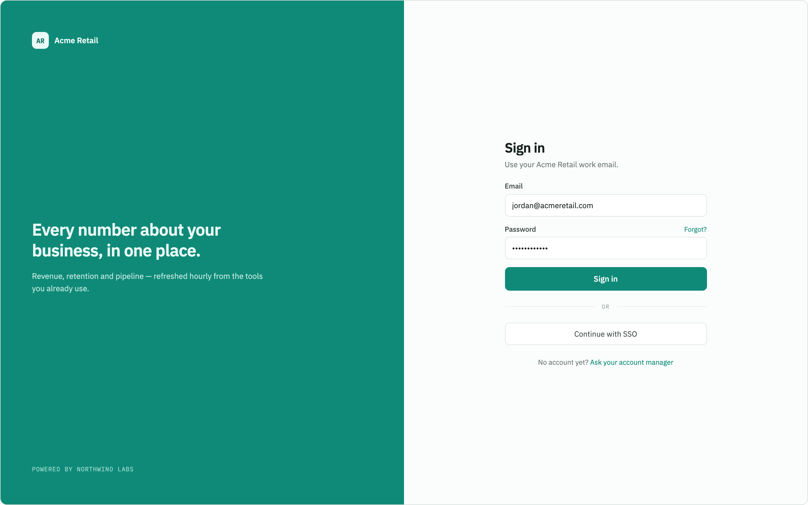
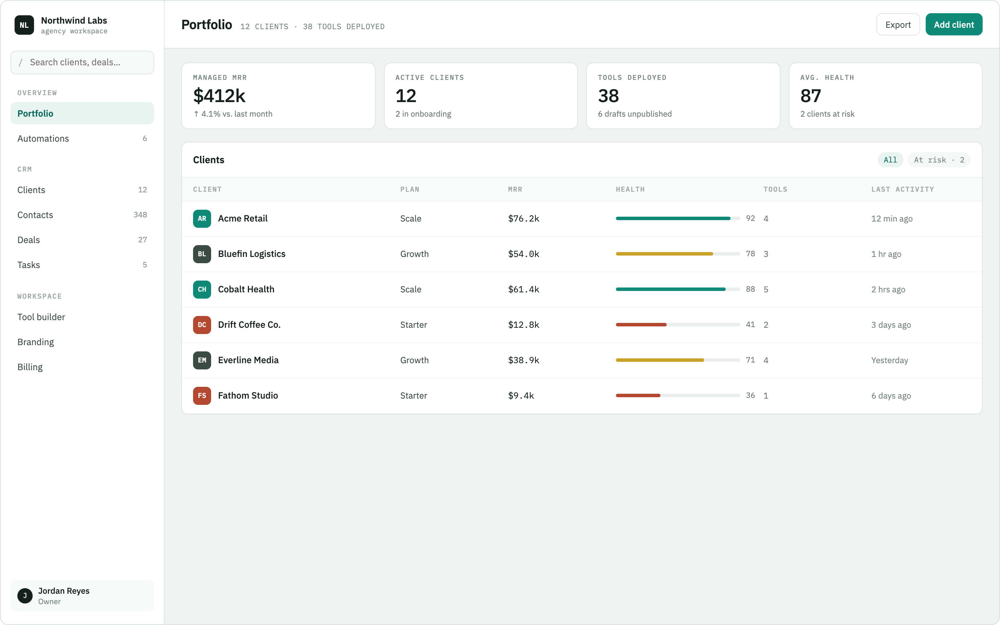
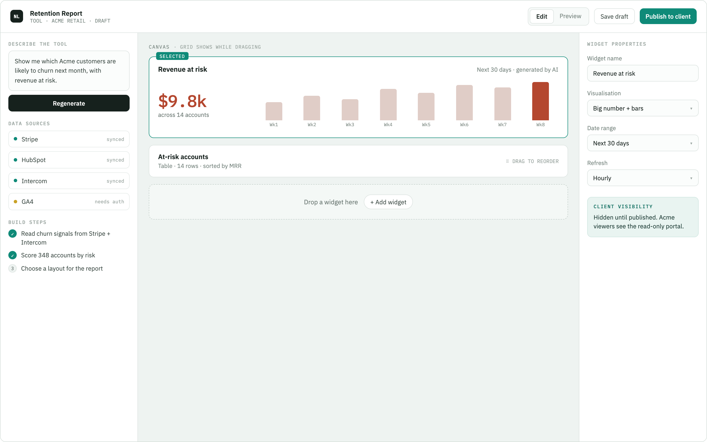
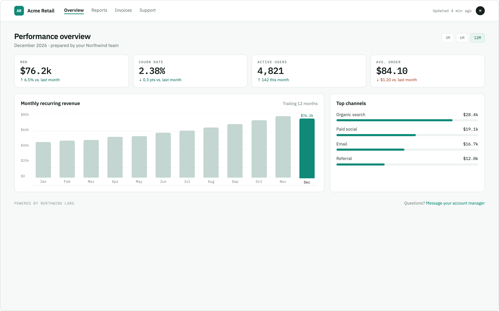

About ForgeCRM
ForgeCRM is a client dashboard platform built for AI agencies. My agency builds AI tools for small businesses - ForgeCRM is where my team manages those clients, and where each client logs in to see their own dashboard. Instead of hand-coding every client's dashboard, someone on the team describes the tool they want in plain English and the AI builds it.
The AI never writes code. It returns a JSON "tool spec" - widget
type, data source, filters, and fields, documented in
tool-spec.md - which one generic
<Widget> component knows how to render. Tool specs
live in MongoDB and belong to a specific client, so a client can only
ever see their own tools and data.
Built by Jacob Arnold for CS 260 (Web Programming) at BYU.
Design mockups
These four sketches drove every page in this deliverable and will drive the CSS deliverable's visual design next.




Technologies
The required stack, and how ForgeCRM uses each piece:
- HTML - this deliverable: semantic pages for login, the agency dashboard, the tool builder, and the client portal.
- CSS - a clean, professional look built with flexbox/grid, coming next deliverable.
- React (Vite) - a single-page app with a generic
<Widget>component that renders any tool spec. - Node.js/Express - the backend service, including the endpoint that calls the Anthropic Claude API.
- MongoDB - stores users, clients, tool specs, and activity history.
- bcrypt - hashes every stored password.
- WebSocket - pushes new tools to clients and client activity to the agency in real time.
- Anthropic Claude API - the third-party API that turns a plain-English description into a tool spec.